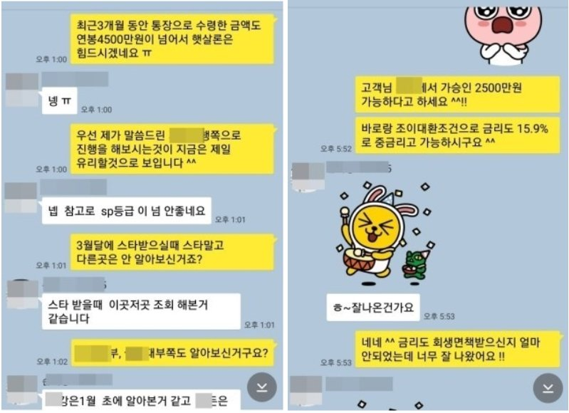

개인회생 면책자 중저금리 대출로 총3000만원 대환대출 승인사례 !!
안녕하세요~ 오늘은 제가 상담 진행해드린 손**고객님의 대출 사례를 안내해
드리겠습니다. 손** 고객님께서는 회생면책 받은지 얼마되지 않은 상황이였고, 4대보험이
가입되어 있는 직장인이셨으며, 월소득은 400만원 정도 되셨습니다. 기존 대출은 삼성생명
1000만원, 조이크레디트840만원(24%), 바로크레디트990만원(24%), 스타크레디트990만원(24%)
이용 중이셔서 좀 더 낮은 금리로 대환을 원하셨고, 최근에 대출 받은지 얼마 되지 않으셔서
다른곳에서 진행을 해보았지만 잦은 부결로 힘들어 하셨습니다. 저는 상담 후 개인회생
면책자 대출로 진행해 드렸고, 그 결과 기존 대출보다 낮은 금리로 모두 대환 하셔서
매우 만족해 하셨습니다. 아래는 저와 손**고객님의 카톡상담 내용 일부를 캡쳐한
것이오니, 참고하시어 많은 도움 되셨으면 좋겠습니다. 감사합니다.^^

[출처] 개인회생 면책자 중저금리 대출로 총3000만원 대환대출 승인사례 !! (뱅크앤론 (직장인대출,개인회생자대출,개인회생대출 등..)) | 작성자 뱅크앤론 김인숙과장